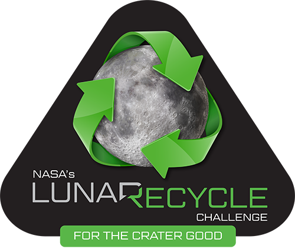

NASA LunaRecycle Challenge
Led 20 student engineers to a Milestone Round win and two Innovation Awards totaling $125,000 for RECLAIM ($50,000 Milestone plus $75,000 for Prototype and Digital Twin Innovation Awards). Designed a two-chamber metal/plastic microwave recycling system and a pyrolysis proof-of-concept for under $500.